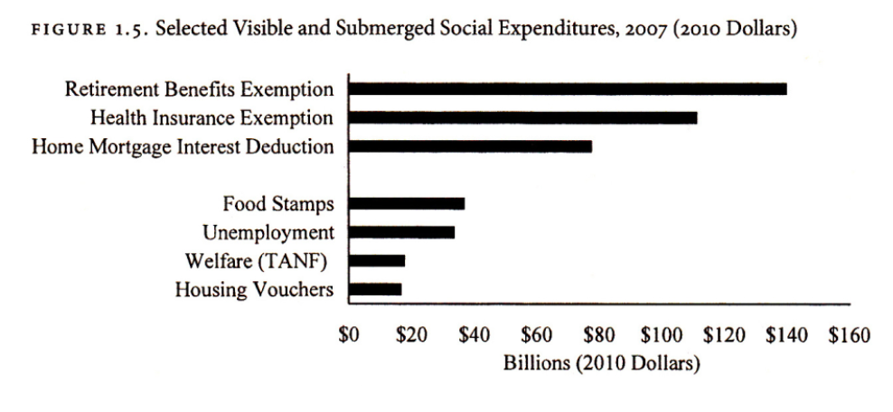

Policy Design
The design of submerged policies is characterized by their indirect and often non-transparent nature. Unlike direct spending programs, these policies are typically woven into the tax code or embedded within complex regulations, making them less visible to the public. This obscurity can lead to a lack of public awareness and accountability, potentially affecting the equitable distribution of benefits.
Understanding the intricacies of such policy design is crucial for evaluating their impact and effectiveness.
Mortgage Interest Deduction
To illustrate this, we'll follow the story of mortage interest deduction;
The Mortgage Interest Deduction (MID) in the United States is a prime example of a submerged policy. It allows homeowners to deduct the interest they pay on their mortgage from their taxable income. As a policy tool embedded in the tax code, its benefits are indirect and less visible compared to direct spending programs.
The MID's complexity and relative obscurity in the tax code mean that many beneficiaries may not realize they are receiving a government-supported benefit. This lack of visibility reduces public scrutiny and debate. Moreover, the MID tends to disproportionately benefit higher-income households, raising questions about the equitable distribution of its advantages. Evaluating the MID's actual impact on homeownership rates is challenging, reflecting the nuanced challenges in assessing submerged policies.